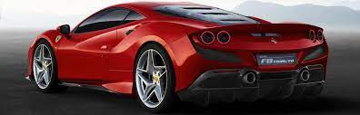

1929–1937: Scuderia Ferrari
Further information: Grand Prix racing history of Scuderia Ferrari
Enzo Ferrari decided to pursue racing in 1908, at the age of ten: to this end, he eventually began a career as a racing driver in 1919. During the 1920s he worked for Alfa Romeo,
both as a driver in various local races and as an employee in its Milan sales depot.nIn 1929, though, he broke from this line of work to found and manage his own racing team, which he named Scuderia Ferrari. Conceived as an outfit for gentleman drivers and other amateurs, the team was founded through a million-lira loan from a local bank, with additional backing from the wealthy amateur racer Mario Tadini, Augusto and Alfredo Caniato — two brothers in the textile industry — and the tyre company Pirelli. It would be based out of Modena, Enzo's hometown.
